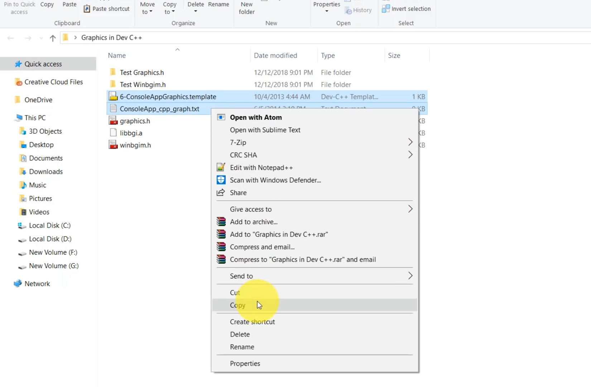
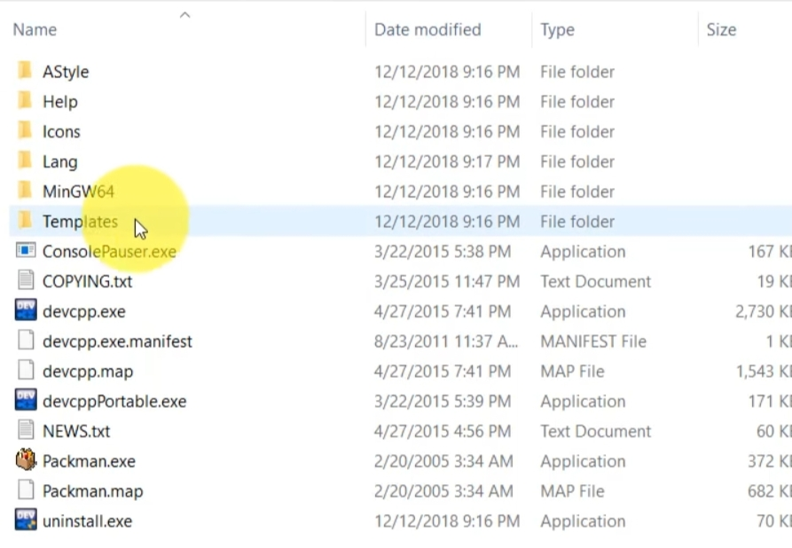
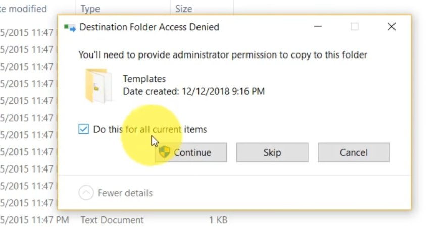
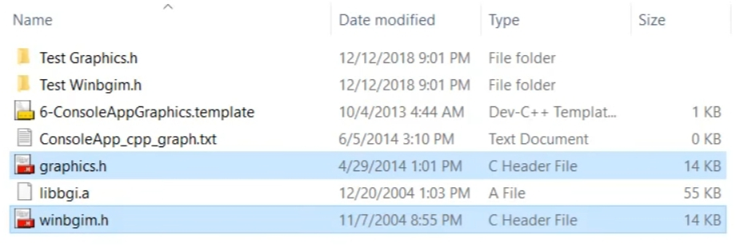
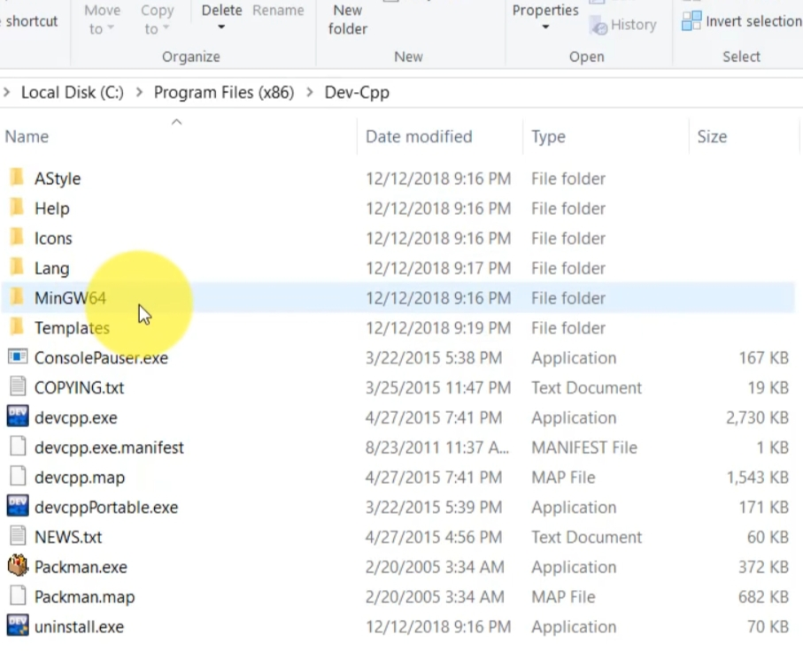
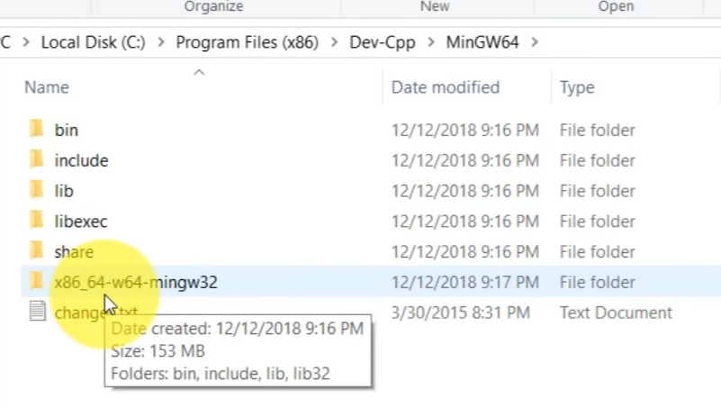
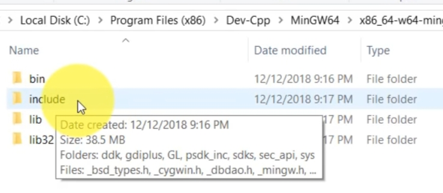
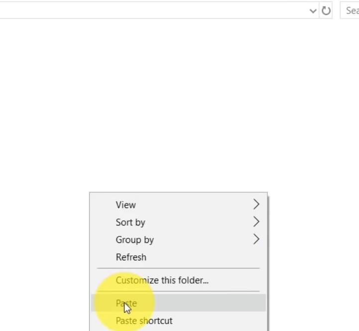
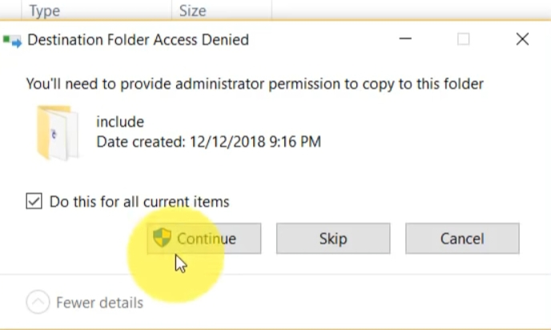

Moving Bike
Note : Install dev C++ IDE in your system
Exercise 1 : Configure Library for using graphic in program
You need to download a folder in your system download link.Download the zip file.Now follow the following steps :
- Open the downloaded folder ,you will see some files.(Now we will insert these files at that place where we have installed our dev c++ folder.)
- Copy :6-ConsoleAppGraphics.template and ConsoleApp_cpp_graph.txt 
- Go to dev C++ folder .
If you have not changed the default path then path will be :
Go to C drive.
Then go to Program files(x86).
Then go to Dev-Cpp - Here,You will see a folder named Templates.Open the Template folder. Open the Folder ,Right click on empty white space and Paste the files here.  
- Once Again Go to that folder where you have downloaded the Zip file or from where you copied the files.
Now copy two files graphics.h and winbgim.h  - Once again go to Dev-cpp folder (path is mentioned in step 3).Here you will see MinGW64 folder. Open that Folder. 
- Inside MinGW64,You will see a folder x86_64_w64-mingw32.open this Folder 
- Inside this Folder You will see a Include Folder. Open that Include Folder 
Now,you have to copy some files from here and paste it at someplace .Follow the following steps to do that :
Here,you will see all dev c++ files.
Rigth Click on empty space & paste the copied files. 
Tick the checkbox and click on continue. 